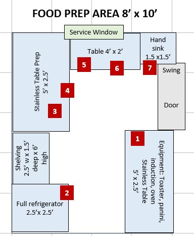

8′ × 10′ · 80 sq ft · Sunday brunch & daily hors d’oeuvres

This is the 8′ × 10′ Food Prep room introduced in the NOVUS layout (May 9, 2026). It supersedes the dual-purpose chocolate-prep-table approach in Vol. II §6 and gives Sunday brunch its own production space.
| Model | Hatco TQ3-400 (or alternate: Star QCS-2-500B, Avantco T140) |
|---|---|
| Price (est.) | $1,200–1,800 · Avantco budget alternate: $550–750 |
| Dimensions | 14.6″ W × 17.5″ D × 14.4″ H. 360 slices/hr capacity. 1.5″ max product thickness. 120V, 14A on dedicated 15A circuit. NSF. |
| Why this one | Hatco is the café standard for conveyor toasters — built to run all morning during brunch without thermal drift, the controls are simple enough that a server can operate it. Bagels are a stated brunch menu item, and a conveyor toaster is the right answer over a pop-up — it handles continuous flow during a brunch rush without operator intervention. |
| Model | Waring WFG250 (cast iron grooved + flat plates, dual heat zones) · alternate: Star CG14E |
|---|---|
| Price (est.) | $650–950 |
| Dimensions | 17″ W × 19″ D × 11″ H. 14″ × 11″ cooking surface. Dual independent thermostats (300–570°F each side). Removable drip tray. 120V, 14A. NSF. |
| Why this one | The dual independent thermostats are why this earns its footprint. One side runs grooved at 400°F for paninis and halloumi, the other side runs flat at 350°F for eggs or warmed brie — simultaneously. Without this, the only path to grilled or pressed items is a flat-top griddle, which is bigger, more expensive, and has hood implications. |
| Model | Vollrath 59500P (same model used at the back bar) |
|---|---|
| Price (est.) | $900–1,100 |
| Dimensions | 14″ W × 15.25″ D × 3″ H. 11″ × 11″ ceramic glass cooking area. 100 power levels (80–450°F precision). Stainless case. NEMA 5-15P standard plug, 120V/15A/1800W. NSF, UL listed. |
| Why this one | Identical model to the back bar’s induction means one spare unit covers both locations if either fails — and the staff already knows the controls. 1800W on a standard 15A outlet means no special electrical work. 100 power levels gives the precision needed. Critical: requires induction-compatible cookware — does not work with copper or aluminum. |
| Model | Waring WCO500X (or upgrade: Cadco OV-013 / Vulcan ECO2D) |
|---|---|
| Price (est.) | $850–1,250 · Vulcan upgrade: $2,400–3,200 |
| Dimensions | 23.5″ W × 23″ D × 14.5″ H. Holds (4) half-size sheet pans on adjustable racks. 200–500°F. Two-speed convection fan. 208V/30A on dedicated circuit. NSF. |
| Why this one | Half-size sheet pan capacity (13″ × 18″) matches the standard pastry tray — whoever you contract with for the brunch pastry program will deliver in half-size sheets. Convection is essential — radiant-only countertop ovens scorch pastry tops while leaving centers cold. |
A Type II hood vents heat, steam, and condensate from non-grease cooking equipment. It is NOT the same as a Type I (grease) hood — Type II is significantly cheaper to install, doesn’t require Ansul fire suppression, doesn’t require commercial-kitchen makeup-air systems, and uses a simpler exhaust duct.
| Price (est.) | Hood unit: $2,400–3,800 · Install (duct, fan, curb, balancing): $3,500–6,500 · Total: $5,900–10,300 |
|---|
| Model | True T-23-HC · upgrade: Traulsen RHT132N |
|---|---|
| Price (est.) | $3,200–4,200 · Traulsen upgrade: $4,800–6,200 |
| Why this one | Same model family used for the chocolate-side reach-in — one parts ecosystem, one service tech, one set of spare door gaskets. The 23 cu ft is sized correctly for a Sunday brunch turnout (eggs in cartons, dairy, cured proteins) plus the daily hors d’oeuvres staging. |
| Price (est.) | Top: $450–650 · UC fridge (True TUC-24-HC): $2,800–3,500 |
|---|---|
| Why this one | The under-counter holds the actively-in-use brunch mise en place (whisked eggs, sliced fruit, prepped vegetables, pre-portioned charcuterie boards) so the chef isn’t walking back to the reach-in mid-service. The prep top above it is the assembly surface. |
Same product as the wash room hand sink and the chocolate prep room hand sink — wall-mount, NSF, gooseneck faucet, 17″ × 15″ footprint. Located on the south wall immediately inside the door so every staff member triggers a handwash before touching food surfaces.
Recommendation: Regency 600HSWALLG — $140–220.
Four-shelf NSF wire shelving unit for dry goods — crackers, oils, vinegars, jars of olives and capers, hot sauces, mustards, salt and pepper, paper goods, packaging supplies.
| Model | Regency 460SHELF1836 (chrome) or 460STAINLESS1836 (stainless) |
|---|---|
| Price (est.) | $165–245 (chrome) · $480–650 (stainless) |
| Why this one | Chrome is fine for dry storage; stainless is overkill at this location since nothing wet sits here. Buy the chrome and put the savings toward the touchless hand-sink upgrade. |
This room generates real heat — the convection oven alone can reject 4,000–6,000 BTU/hr during operation, plus the toaster, panini press, induction, UC fridge, reach-in. Two viable strategies:
Strategy (b) is cheaper but leaves the room hot during summer brunch service when the dining floor isn’t fully occupied yet.
| Price (est.) | Mini-split: $2,800–4,200 installed · Transfer-air alternate: $400–800 |
|---|---|
| Why this one | Same family as chocolate prep room mini-split, just smaller capacity — one tech, one parts inventory, one set of remote controls. Don’t mix Mitsubishi for chocolate prep and Daikin or Pioneer for food prep just to save $300. |
Continuous-flow toasting at 360 slices/hour. The piece that prevents Sunday morning bottlenecks.
Without a conveyor toaster, your kitchen bottleneck on Sunday morning is bagel toast, full stop.
Dual independent zones — grooved plate and flat plate — operating as two pieces of equipment in one footprint.
Grooved side: Pressed sandwiches (smoked salmon + dill cream cheese on dark rye, prosciutto + fig + brie on ciabatta), halloumi, crostini with melted cheese, bruschetta with grill marks, quick-grilled vegetables for charcuterie boards.
Flat side: Eggs over easy or sunny-side up, smashed potato cakes, warmed brie wheels, pre-warming flatbreads or wraps, raclette-style cheese applications.
The dual independent thermostats are why this earns its footprint.
100 power levels of precise heat. The single irreplaceable piece in this lineup.
Hollandaise alone justifies the $900 — eggs benedict is a brunch staple that drives ticket averages and Sunday repeat visits.
Half-size sheet pan capacity, four racks, even circulation. The piece that makes 50-cover brunch service actually possible.
Source pastries, don’t bake them on-site. Half-size sheet pan (13″ × 18″) is the standard format used by every Durham bakery you’d contract with — Loaf, Guglhupf, Ninth Street Bakery. Your differentiator is chocolate, not croissants.
Assumptions: 50 covers across the 6-hour brunch window (8 AM–2 PM), with peak load of 25 covers concentrated between 10:30 AM and 12:30 PM.
| Equipment | Capacity / cycle | Cycle time | Items / hour | Headroom at 50 covers |
|---|---|---|---|---|
| Conveyor toaster | 1 bagel half / pass | 30 sec / pass | ~120 / hr | 6× headroom |
| Panini press (grooved) | 2 paninis | 4 min / cycle | ~30 / hr | Comfortable |
| Panini press (flat) | 4 eggs or 2 cakes | 3 min / cycle | ~80 eggs / hr | Comfortable |
| Induction burner | 1 saucepan held warm | Continuous | Holds | Pre-batch helps |
| Convection oven | 12 ramekins / 4 trays | 12 min / cycle | ~60 / hr | 5× headroom |
At 50 covers, the kitchen runs comfortably with one chef plus one prep helper. Above 60–70 covers, you’d hit a hollandaise replenishment ceiling and want a second induction burner. Don’t add the second burner at opening; revisit at 6 months once actual brunch volume is known.
The four-piece equipment palette is sized for one chef plus one helper in the Food Prep room, plus the bartender handling all beverages. Total Sunday morning labor: ~30 labor-hours.
At 50 covers averaging $35 per cover, that’s $1,750 in revenue against an estimated labor cost of $480–540 (at $16–18/hr blended) and food/beverage cost of $560–630 (at 32–36% combined COGS). Estimated contribution: $580–710 per Sunday brunch service. Across a year of Sundays, that’s $30K–37K of contribution from a service that uses idle weekend afternoon real estate productively.
| Slot | Recommended product | Est. price |
|---|---|---|
| 1. Reach-in refrigerator | True T-23-HC | $3,200–4,200 |
| 3. Stainless prep top (60″ & 48″) | Advance Tabco custom | $450–650 |
| 4. Conveyor toaster | Hatco TQ3-400 | $1,200–1,800 |
| 5. Panini press | Waring WFG250 | $650–950 |
| 5. Under-counter refrigerator | True TUC-24-HC | $2,800–3,500 |
| 6. Induction burner | Vollrath 59500P | $900–1,100 |
| 7. Convection oven | Waring WCO500X | $850–1,250 |
| 8. Type II hood (if required) | CaptiveAire ND2-PSP-2 + install | $5,900–10,300 |
| 9. Hand sink | Regency 600HSWALLG | $140–220 |
| 10. Wire shelving | Regency 460SHELF1836 | $165–245 |
| 11. Mini-split (if chosen) | Mitsubishi MSZ-FS09NA | $2,800–4,200 |
| Subtotal (low–high) | $21,455–32,215 | |